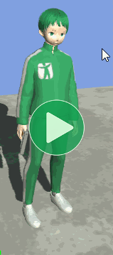
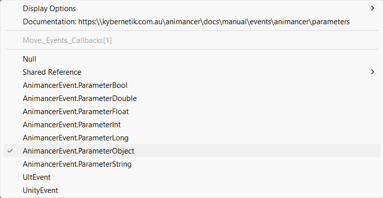
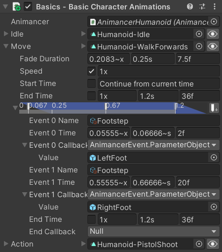

Location: Samples/05 Events/02 Footstep Events
Recommended After: Golf Events
Learning Outcomes: in this sample you will learn:
How to use Animancer Events with parameters.
How to bind Animancer Event callbacks without directly touching the transition.
Summary
This sample demonstrates how to use Animancer Events with parameters and how to bind their callbacks to any event with a particular name in any animation.
- Each event has a parameter containing an
AudioSourceattached to the appropriate foot so the sound can be played from the correct position.- It also briefly shows a sphere at that position to make it more obvious which foot the event is for.
- The parameter is assigned using the event
Callbackfield in the Inspector.
- Instead of assigning the actual callback to the events on a specific Transition or state, this sample binds it to the event name so that any event with that name from any state will trigger the same callback.
Overview
The general code structure is similar to the Basic Character sample in the top right since it reuses the same BasicCharacterAnimations script with the same animations, except the Move transition has also been given events:
- The
Names reference the Footstep String Asset for both feet. - The
Callbacks are set asAnimancerEvent.ParameterObjects which reference anAudioSourceattached to each foot.
{kind=link}
FootstepEvents is independent of any specific animation, it simply registers its callback for any event with the name Footstep regardless of where the event came from:
using Animancer;
using UnityEngine;
public class FootstepEvents : MonoBehaviour
{
[SerializeField] private AnimancerComponent _Animancer;
[SerializeField] private StringAsset _EventName;
[SerializeField, Range(0, 1)] private float _PitchRandomization = 0.2f;
[SerializeField] private AudioClip[] _Sounds;
protected virtual void Awake()
{
_Animancer.Events.AddTo<AudioSource>(_EventName, PlaySound);
}
private void PlaySound(AudioSource source)
{
source.clip = _Sounds[Random.Range(0, _Sounds.Length)];
source.volume = AnimancerEvent.Current.State.Weight;
source.pitch = Random.Range(1 - _PitchRandomization, 1 + _PitchRandomization);
source.Play();
GameObject sphere = GameObject.CreatePrimitive(PrimitiveType.Sphere);
Transform transform = sphere.transform;
transform.parent = source.transform;
transform.localPosition = Vector3.zero;
transform.localScale = Vector3.one * 0.2f;
Destroy(sphere, 0.1f);
}
}
This means if you were to put a Run animation in the Action transition and give it Footstep events, they would automatically trigger the same callback without any scripting changes.
Parameters
Setting up event Callbacks in the Inspector is generally not recommended as explained in the Golf Events sample.
But the Callback field is still useful because it allows parameters to be assigned by selecting the AnimancerEvent.Parameter... options.

This sample uses an AnimancerEvent.ParameterObject for each event to reference the character's feet. The Inspector doesn't know what type of object we want, so we just assign the GameObjects and when the callback asks for an AudioSource it will get that component from the assigned object.
Binding the Callback
FootstepEvents is responsible for playing sounds in response to events. It doesn't play animations or decide when the events occur, it only does that one thing in accordance with the Single Responsibility Principle.
Since it doesn't have a direct connection to any specific AnimancerState, it simply binds its callback in the central AnimancerComponent.Events so it will apply to any event from any state as long as it has the specified name.
[SerializeField] private AnimancerComponent _Animancer;
[SerializeField] private StringAsset _EventName;
protected virtual void Awake()
{
_Animancer.Events.AddTo<AudioSource>(_EventName, PlaySound);
}
private void PlaySound(AudioSource source)
{
...
}
- Note that
PlaySoundtakes anAudioSourceparameter, which is how it receives the objects we assigned as Parameters in the Inspector. - A callback added to a specific state or transition can also use parameters in the same way as long as you use
AddCallback. Don't useSetCallbackbecause that would replace the parameter assigned as theCallbackin the Inspector.
Playing Sounds
Using only a single footstep sound every time feels repetitive for players, so instead we have an array of similar ones and pick a random one each time.
[SerializeField] private AudioClip[] _Sounds;
[SerializeField, Range(0, 1)] private float _PitchRandomization = 0.2f;
private void PlaySound(AudioSource source)
{
source.clip = _Sounds[Random.Range(0, _Sounds.Length)];
Slightly randomizing the pitch of the sound can also help make it feel less repetitive.
source.pitch = Random.Range(1 - _PitchRandomization, 1 + _PitchRandomization);
The animation has an event right near the start so when the character first starts Walking it will trigger that event while still fading into the animation. Since the animation isn't yet fully affecting the character, we can proportionally reduce the volume of the sound by multiplying it by the Weight of the state containing the event.
source.volume = AnimancerEvent.Current.State.Weight;
And then we actually play the sound.
source.Play();
Spheres
It's pretty hard to hear the difference between the sounds coming from each foot unless the camera gets really close (and even harder when watching these videos which don't have sound) so in order to clearly show that it's working as intended we also use GameObject.CreatePrimitive to make a sphere on each foot whenever it triggers an event.
GameObject sphere = GameObject.CreatePrimitive(PrimitiveType.Sphere);
Transform transform = sphere.transform;
transform.parent = source.transform;
transform.localPosition = Vector3.zero;
transform.localScale = Vector3.one * 0.2f;
Destroy(sphere, 0.1f);
}
Note the second parameter in Destroy which delays the object's destruction by 0.1 seconds instead of doing it immediately.
What Next?
| Sample | Topic |
|---|---|
| Uneven Ground | Uses raycasts to determine how to position the character's feet without floating or going through the ground. This sample doesn't involve events, you could potentially use the same data to determine when to trigger footstep sounds as well. That would allow it to work for all animations without manually adding events to them all and could do things like calculating the desired volume based on the velocity of the foot and playing different sounds based on where each foot actually lands rather than the character's center. |
| 3D Game Kit | Uses animation curves instead of events to determine when to play footstep sounds. It also has different sounds depending on the surface the character is standing on. |